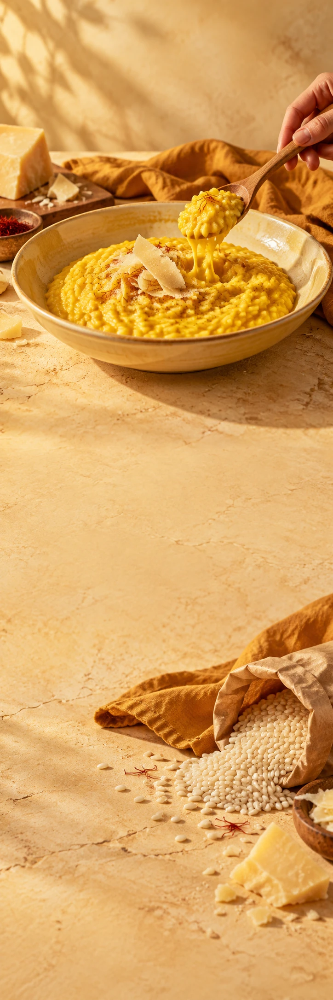

ROER
er een avond
BIJ ELKAAR.

Geen haastgerecht.
Wel een heel goed plan.
De tafel komt daarna.
Zo begint
een fijne avond.
01
Begin bij de pan.
Fruit de ui, voeg de rijst toe en roer tot alle korrels glanzen.
02
Een scheutje aandacht.
Schep warme bouillon erbij. Laat opnemen. Roer rustig verder.
03
Maak het af.
Voeg toe wat jij lekker vindt. Proef nog even. Roep iedereen aan tafel.
Het lekkerste komt
na het roeren.